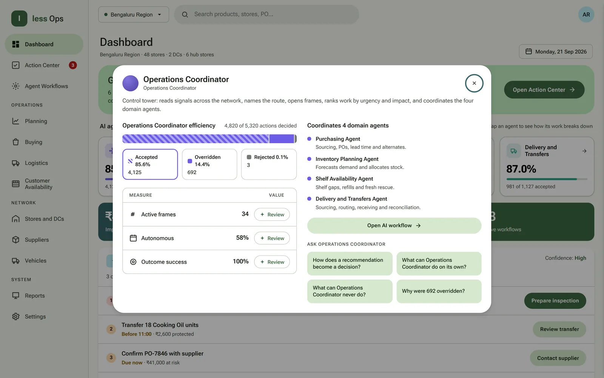
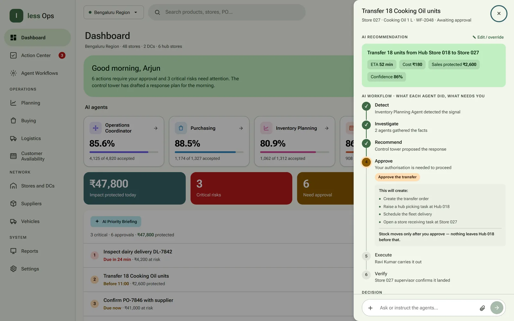

An AI-assisted control tower that watches a supermarket region around the clock, drafts the fix, and hands the manager a ranked plan to approve.
Role
End-to-end product design
Region
48 stores, 2 DCs, 6 hubs
Agents
1 coordinator + 4 domain
Output
Interactive prototype
The morning view: what needs a decision, and what the agents have already drafted.
02 — The problem
A region loses money in the gaps between systems.
Stock, suppliers, shelves and deliveries each have their own screen, and the trouble lives between them. A shortage shows up in one system, the stock that would fix it sits in another, and the vehicle that could move it is in a third. By the time someone joins them up, the shelf has been empty for a day.
less Ops watches all four together. When something drifts it opens a case, works out what happened, and proposes the response — leaving the manager to judge it rather than assemble it.
03 — Who it is for
The people who run, supply and staff a grocery region.
Regional manager — approves the consequential calls and carries the P&L.
Store and hub staff — picking, dispatch and receiving: the people who execute.
Category and supply teams — suppliers, purchase orders, lead times and alternates.
The view they share: one queue across stores, inventory, suppliers and deliveries — each row carrying its owner and status.
04 — AI agents
Five agents, one control tower.
A coordinator reads the whole network and routes work to four domain agents. Each has its own sub-agents and reports back rather than acting alone.
Agents recommend; people decide. They do not move stock, raise purchase orders or dispatch vehicles on their own — anything consequential waits for approval.
Operations Coordinator
Control tower
Reads signals across the network, opens a case, ranks work by urgency and impact, and coordinates the four domain agents beneath it.
Purchasing
Inventory Planning
Shelf Availability
Delivery and Transfers
85.6%4,125 of 4,820 recommendations accepted
Inventory Planning
Forecast and allocation
Forecasts demand, detects stockouts before they land, and splits limited distribution-centre stock by urgency, safety stock, capacity and store maturity.
Demand Forecast
Store Stock Allocation
80.9%1,062 of 1,312 recommendations accepted
Purchasing
Sourcing and supply
Supplier intelligence and sourcing — purchase orders, vendor changes, lead times, pricing, minimum order quantities, terms and alternates.
Purchase Order
Supplier Delivery Scheduling
88.5%1,174 of 1,327 recommendations accepted
Shelf Availability
Availability and freshness
Shelf gaps, replenishment timing, fresh-stock rescue, quality checks and suitable substitutions — the last few metres to the customer.
Shelf Refill
Fresh Food Rescue
86.1%908 of 1,054 recommendations accepted
Delivery and Transfers
Movement and reconciliation
Hub supply and source selection, transfer documents, picking, routing, live shipments, receiving capacity and reconciliation.
Hub-to-Store Supply
Stock Transfer
Transfer Order
Picking and Dispatch
Route and Vehicle
Delivery Tracking
Receiving Space
Delivery Receiving
87.0%981 of 1,127 recommendations accepted

The coordinator's view: the four domain agents it routes work to, each with its own sub-agents.
05 — System flow
Signal to verified outcome, in the same six steps every time.
01
Detect
An agent spots a risk in the signals it watches.
Signal
02
Investigate
Agents gather the facts and confirm what is happening.
Evidence
03
Recommend
The control tower drafts a response, with its cost and confidence.
Draft
04
Approve
A person judges it. Nothing consequential moves before this.
Human
05
Execute
The work is issued to the named people who carry it out.
Action
06
Verify
The outcome is confirmed on the ground and closed off.
Close
The map holds the whole path in one view, so a recommendation can always be traced back to the signal that caused it.
06 — Worked example
Store 027 runs out of cooking oil.
One real case from the prototype, followed through all six steps.
StepWhat happensWho
DetectStore 027 has 12 units of 1 L cooking oil left against demand for 28 — a gap that lands by the end of the day.Inventory Planning
InvestigateAgents check nearby stock and confirm Hub Store 018 can cover it without opening a second shortage.Agents
RecommendThe control tower proposes transferring 18 units from Hub 018 to Store 027, with the cost and the sales it protects.Control tower
ApproveThe manager approves. Only then is the transfer order raised, the picking task created and the delivery scheduled.Regional manager
ExecuteA named driver carries it out, and the shipment is tracked on its way.Hub and driver
VerifyThe Store 027 supervisor confirms arrival and the shelf is replenished. The case closes.Store supervisor

The recommendation, what each agent did, and the point where it waits for a person.
07 — My role
From framing the problem to a working prototype.
End to end: the problem, the product plan, how the agents divide the work and hand it back, the interface and its visual system, and the interactive prototype that runs all of it.
Problem framingProduct planningAgent and workflow designUI designVisual systemInteractive prototype
08 — The product
The manager judges the plan. The agents assemble it.
Every case in the prototype runs the same path, from the signal that raised it to the person who confirms it on the ground.